Práctica creativa
Mi práctica explora cómo los objetos editoriales pueden convertirse en espacios donde las historias personales encuentran forma, archivo y memoria.
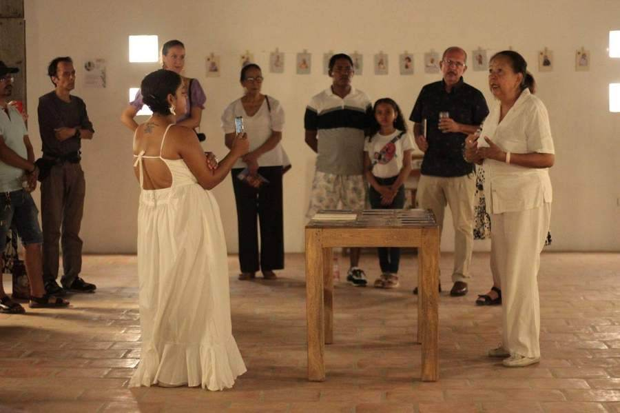
Residencia artística · Mompox · 2024
Mujeres momposinas: sus voces, relatos y genealogías narrativas. Laboratorios de memorias, experimentación plástica y creación de un oráculo de historias.
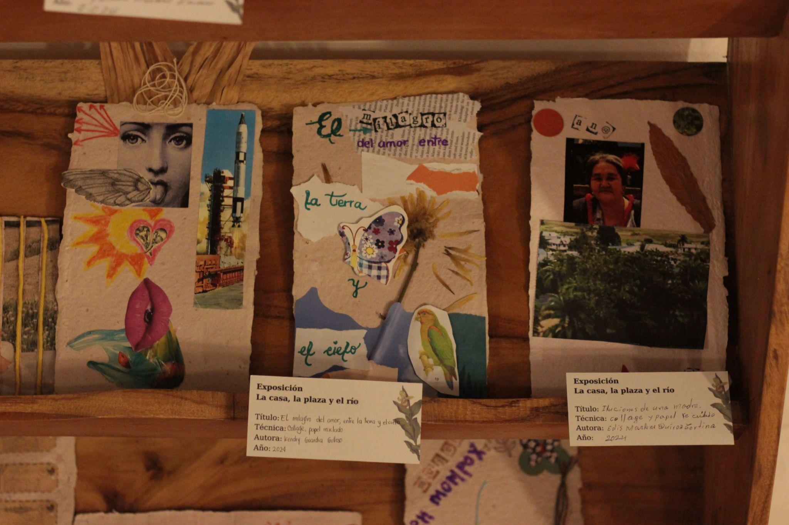
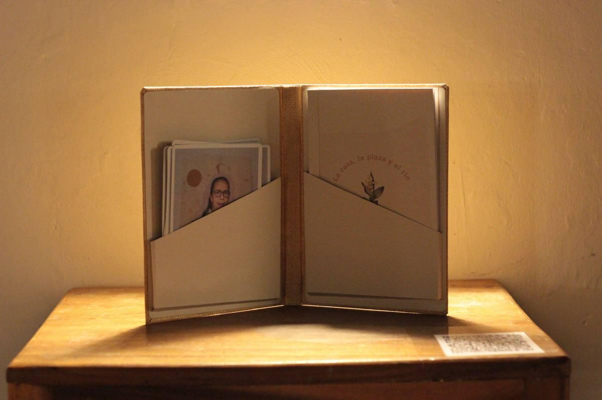
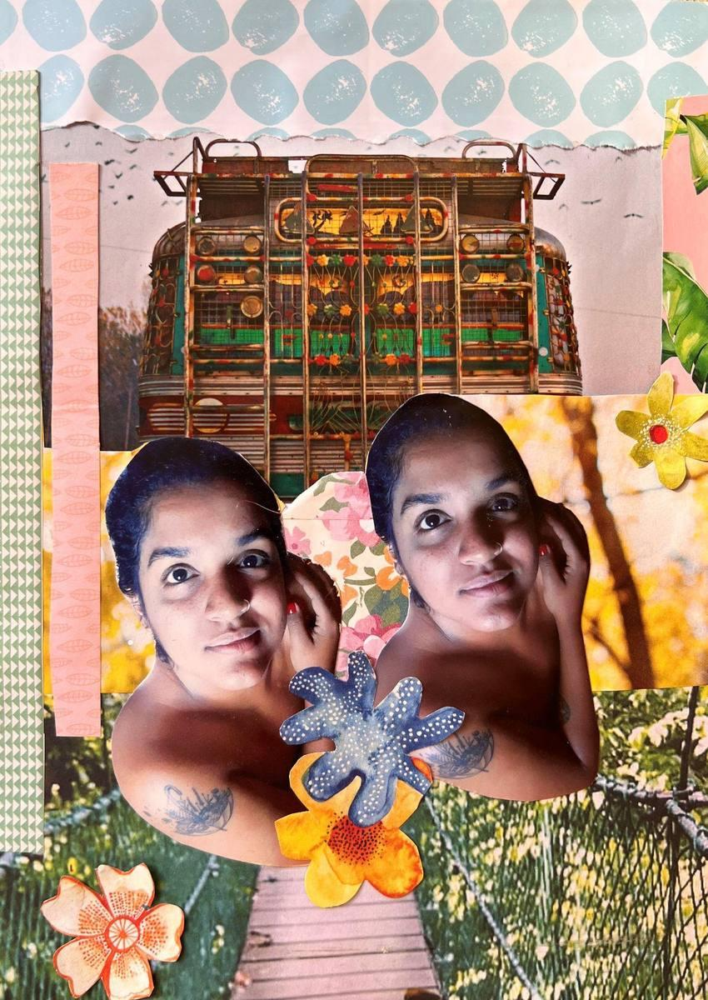
Exposición · Kampala, Uganda · 2023
Primera exposición pública de poemas y collages. Look One – Edición 3. La serie surgió como un ejercicio de introspección a través del collage y la escritura.
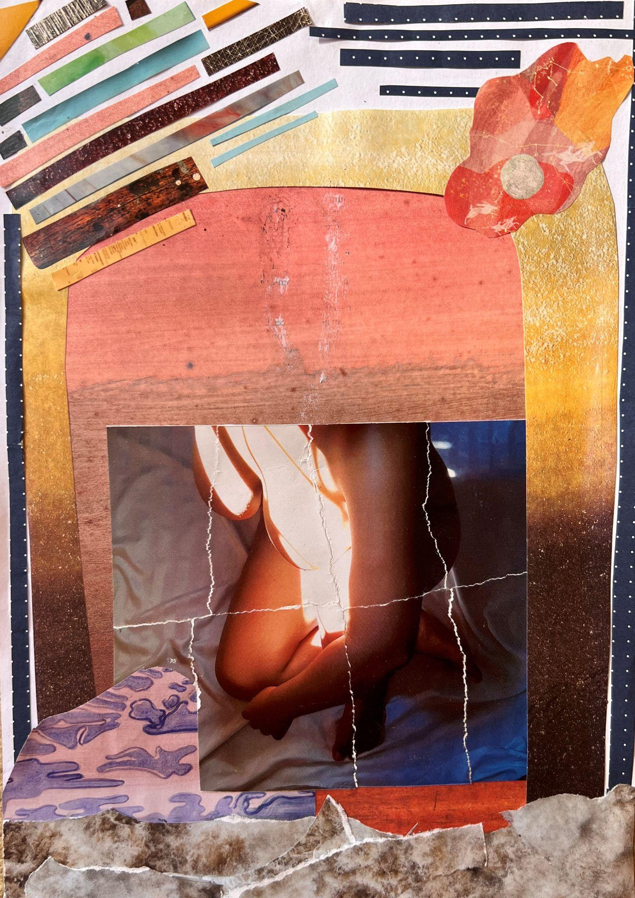
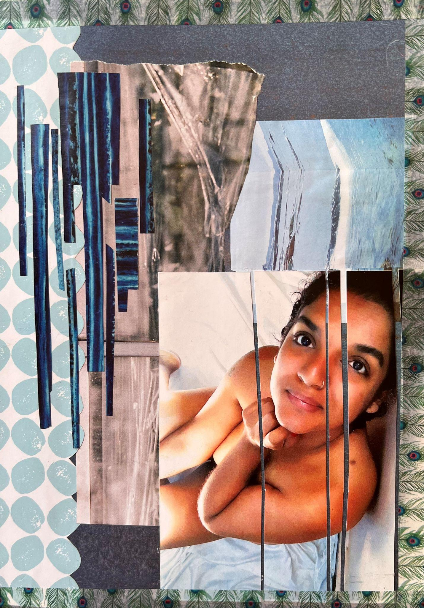
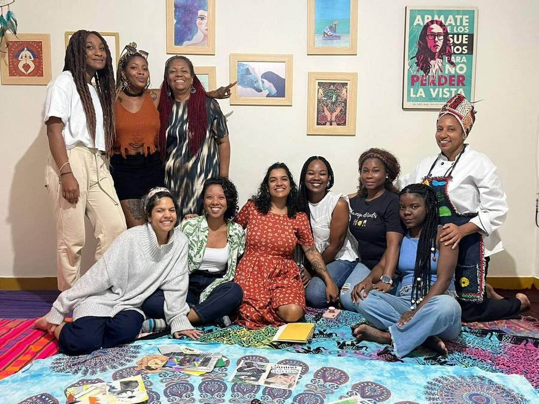
Taller · Medellín · Nov 2024
Diseño de metodología y creación de libretas para el cancionero íntimo con la cantautora Alicia y la Marea. Círculos de palabra, escritura y creación con mujeres afro.
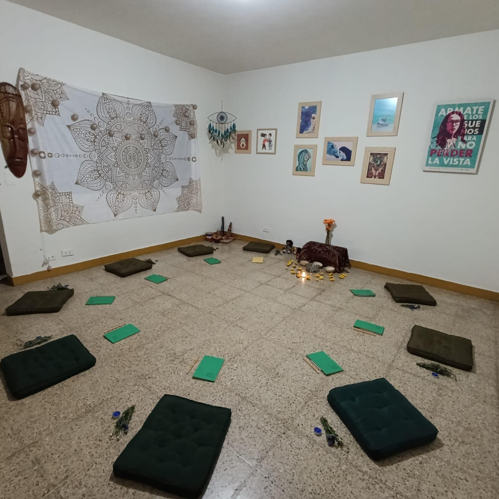
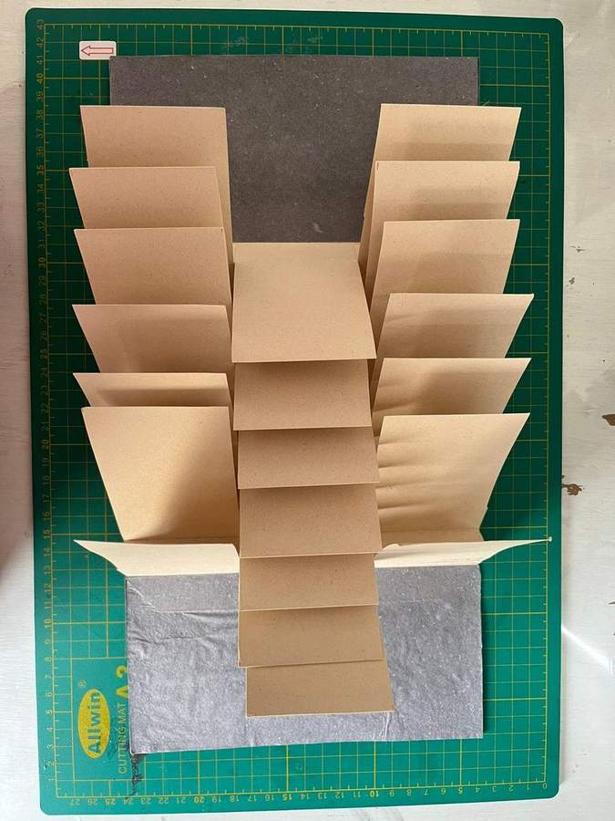
Taller La Estampa · Medellín · 2024
Conceptos básicos sobre el libro de artista, técnicas de plegado, encuadernación e intervención de imágenes.
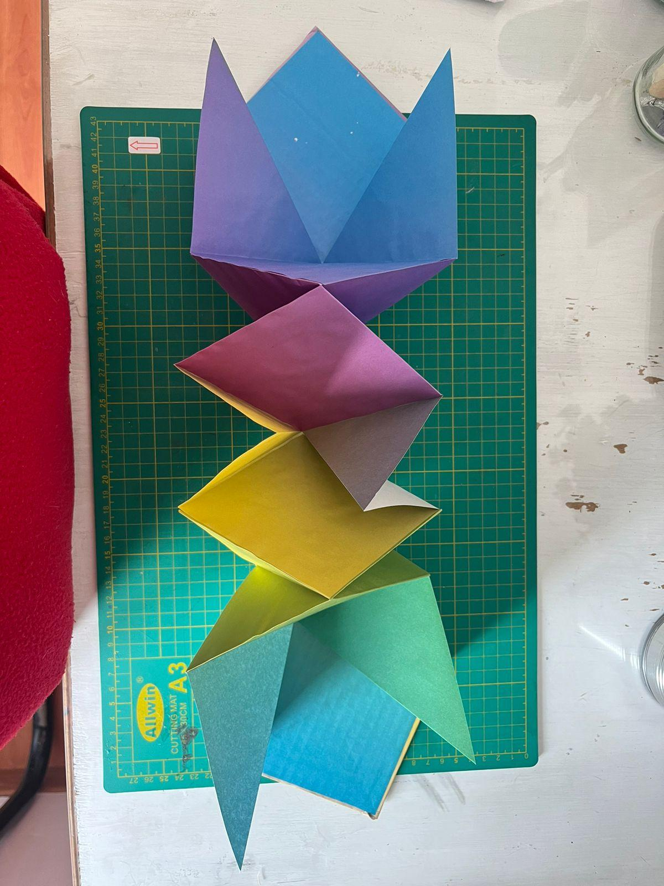
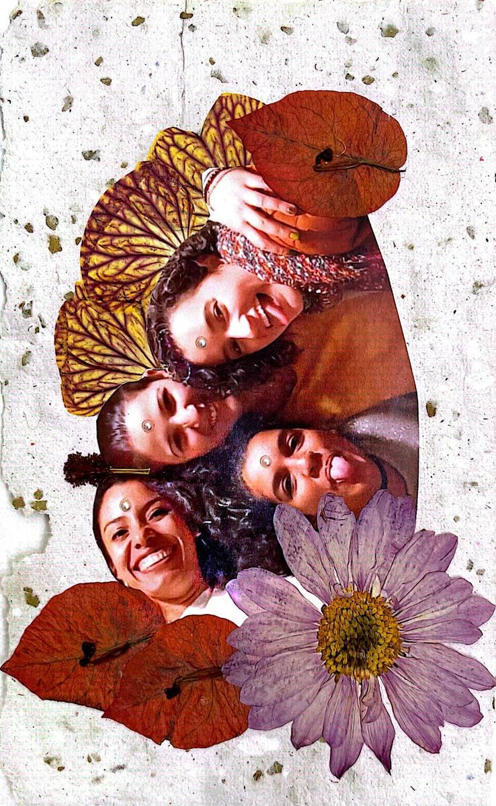
Serie de 20 collages · 2024
Papel reciclado y fibras vegetales. La vuelta al territorio después de un exilio voluntario. Un ejercicio de autoexploración y reconexión.
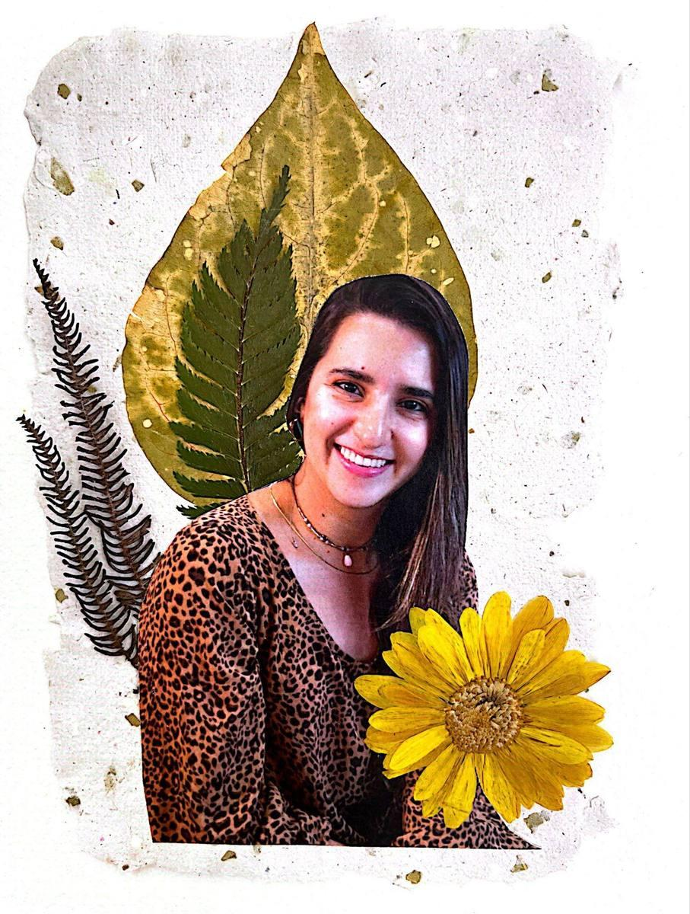
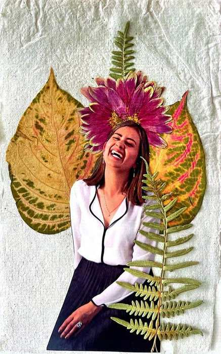
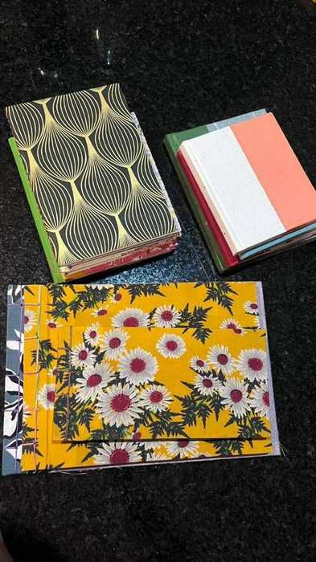
Taller Tundra · Bogotá · 2026
Plegado de papel, encuadernación e intervención de imágenes. Caballete, japonesa, costura francesa y acordeón.
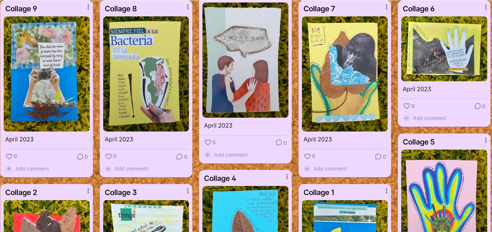
Práctica continua · +3 años
La práctica del collage en papel como fuente creativa de conocimiento. Exploración de la intuición y el subconsciente.